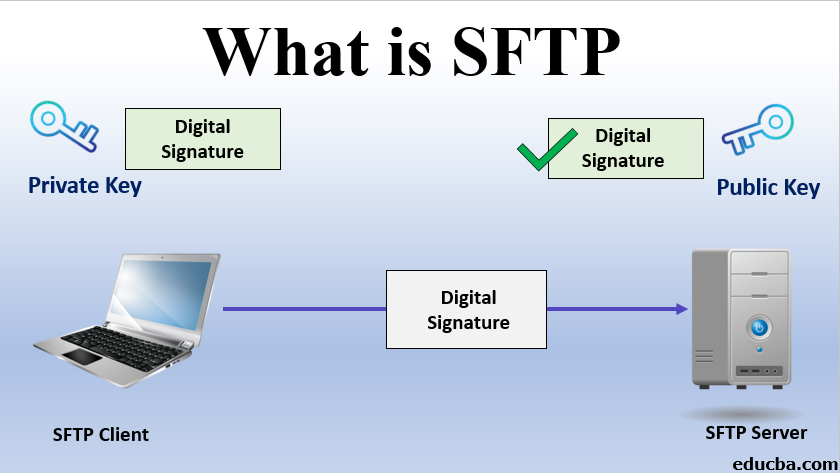
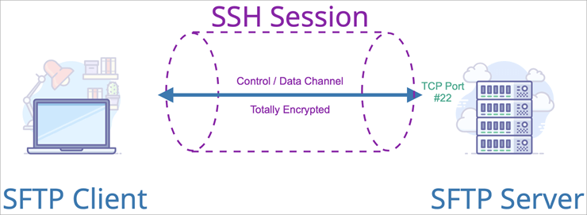
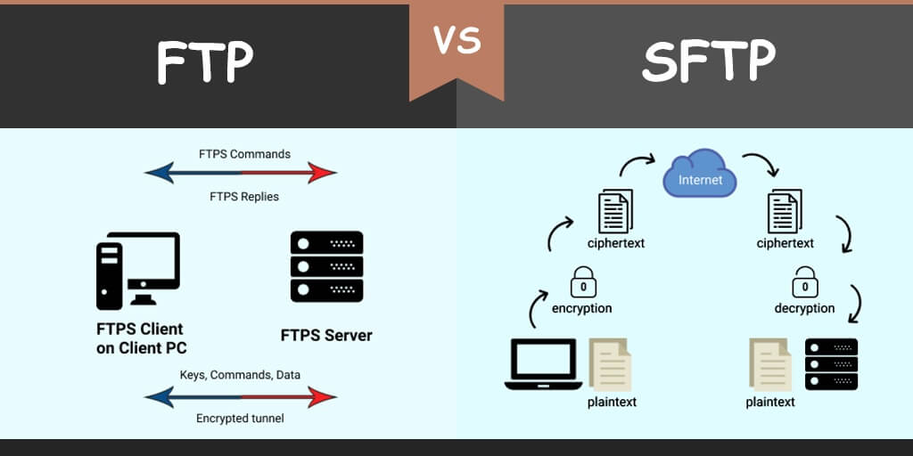
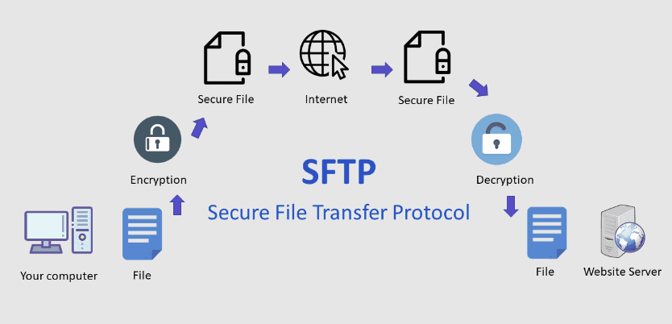

Какво използва SFTP?
SFTP надгражда Secure Shell (SSH). Интернет протокола SFTP,
имплементира AES, Triple DES, и други подобни алгоритми, за да криптира
данните, които пренасяме между две системи.

Как работи SFTP?
Проткола надгражда Secure Shell, за да установи безопасна бръзка и да предостави на организациите
по-високи нива на защита при прехвърлянето на файлове.
Това е така, защото SFTP използва алгоритми за криптиране, за да премести сигурно данни към вашия
сървър
и да запази файловете нечетими по време на процеса.
Удостоверяването предотвратява неоторизиран достъп до файлове по време на операцията.

SFTP и Криптиране
SFTP използва AES, Triple DES и други подобни алгоритми за криптиране на данните за прехвърляне.
SFTP използва един порт (порт 22), за да установи сигурна връзка. Криптира както информацията за
удостоверяване,
така и прехвърляните файлове.

Методи за удостоверяване
Един SFTP сървър изисква търговските партньори да се удостоверяват по един от два различни начина.
Те могат или да докажат самоличността си с потребителско име
и парола (тази информация е криптирана през SFTP връзката,
вместо да се изпраща чрез обикновен текст), или да потвърдят с SSH ключ. Потребителите могат също да
използват двуфакторно удостоверяване и комбинация от SSH ключ
и парола. Тези видове удостоверявания предотвратяват
измамници от свързване към SFTP сървъра.
Има известен дебат дали SSH ключовете или паролите са по-добри за защита и валидиране на компания
SFTP сървъри. За пълно сравнение на двата метода за удостоверяване,
прочетете SSH ключове или пароли по-добри ли са за SFTP удостоверяване?

Допълнително полезни сайтове за SFTP: